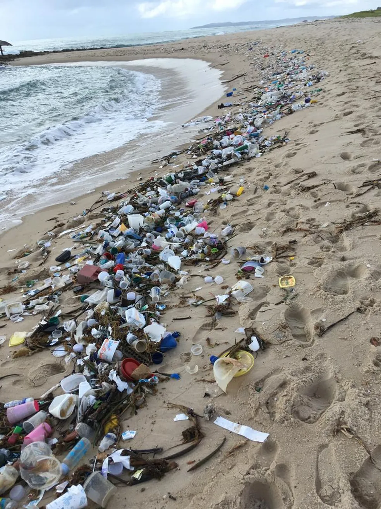
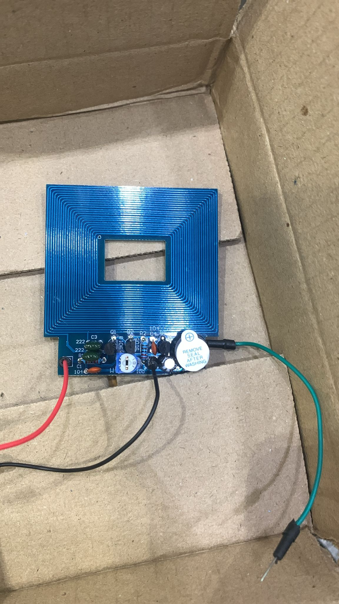
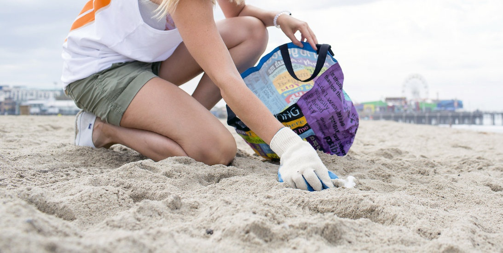
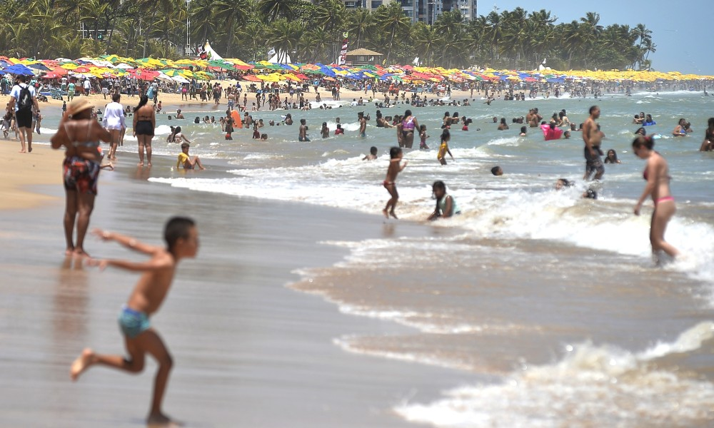
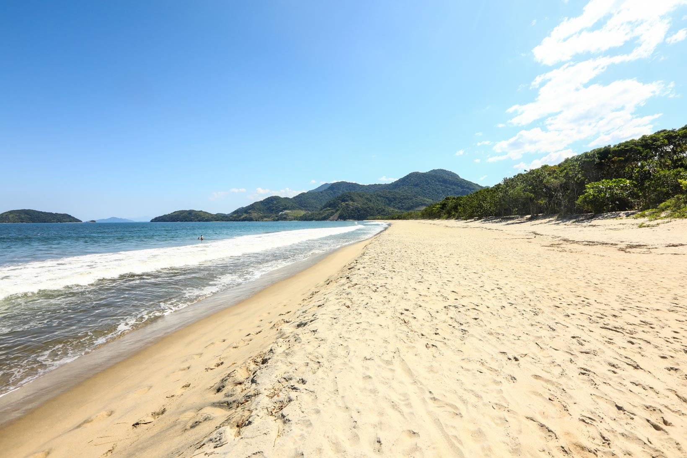
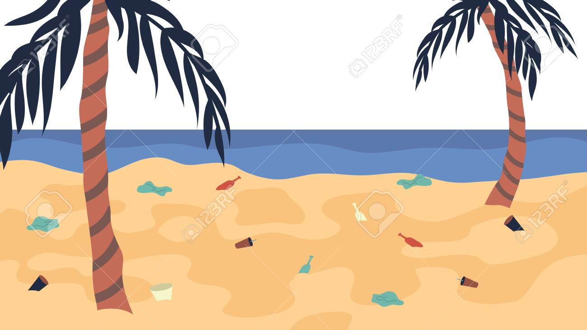

Problema
O problema que procuramos resolver é, junto com nossa organizadora de viagens, diminuir a quantidade de lixo metálico deixado na praia.
Tecnologias
Para resolver nosso problema usamos um simples arduino e uma peça para auxiliar na montagem de um detector de metal, o qual será usado nas praias para diminuir a quantidade de lixo metálico encontrado.
Objetivos
Com o nosso detector de metal pretendemos ajudar as pessoas que frequentam a praia a poder aproveitar seu dia de lazer sem se preocupar em se machucar com pequenos detritos de lixos metálicos.
Publico
O nosso público alvo, além das pessoas que frequentam a praia, serão as pessoas que moram por perto dessas praias, ja que estaremos ajudando a limpar a cidade das mesmas.
Ganhos
Com a nossa ajuda as pessoas vão ganhar uma qualidade de vida melhor e menos poluída para aproveitarem seus momentos de lazer na praia.
Dia-Dia
Com a limpeza dos lixos metálicos na praia o perigo das pessoas se cortarem em alguma coisa cai drasticamente, além disso, animais marinhos serão poupados de serem alvos da poluição em massa nas praias.